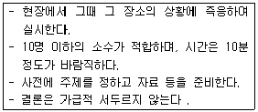
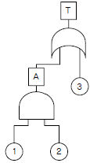
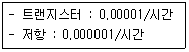
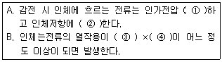
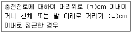
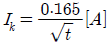
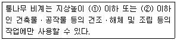
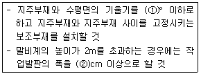
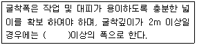

산업안전기사 (2013-08-18 기출문제)
1과목: 안전관리론
1. 다음 중 무재해운동 추진에 있어 무재해로 보는 경우가 아닌 것은?
- 출ㆍ퇴근 도중에 발생한 재해
- 제3자의 행위에 의한 업무상 재해
- 운동경기 등각 종행사 중 발생한 재해
- 사업주가 제공한 사업장내의 시설물에서 작업개시전의 작업준비 및 작업종료후의 정리정돈과정에서 발생한 재해
(정답률: 78%)

2. 학습지도의 형태에서 몇 사람의 전문가에 의해 과정에 관한 견해를 발표하고 참가자로 하여금 의견이나 질문을 하게 하는 토의방식은?
- 포럼(Forum)
- 심포지엄(Symposium)
- 버즈세션(Buzz session)
- 자유토의법(Free Discussion Method)
(정답률: 78%)
3. 다음 중 맥그리거(McGregor)의 인간해설에 있어 X 이론적 관리 처방으로 가장 적합한 것은?
- 직무의 확정
- 분권화와 권한의 위임
- 민주적 리더쉽의 확립
- 경제적 보상체계의 강화
(정답률: 66%)
4. 일상점검 중 작업 전에 수행되는 내용과 가장 거리가 먼 것은?
- 주변의 정리ㆍ정돈
- 생산품질의 이상 유무
- 주변의 청소 상태
- 설비의 방호장치 점검
(정답률: 88%)
5. 산업안전보건법령상 사업내 안전ㆍ보건교육에 있어 채용시의 교육 및 작업내용 변경시 교육 내용에 포함되지 않는 것은? (단, 산업안전보건법 및 변경시의 교육 내용에 포함되지 않는 것은? (단, 산업안전보건법 및 일반관리에 관한 사한은 제외된다.)
- 물질안전보건자료에 관한 사항
- 작업 개시 전 점검에 관한 사항
- 유해, 위험 작업환경 관리에 관한 사항
- 기계ㆍ기구의 위험성과 작업의 순서 및 동선에 관한 사항
(정답률: 49%)
6. 다음 중 재해손실비용에 있어 직접손실비용에 해당되지 않는 것은?
- 채용급여
- 간병급여
- 장해급여
- 유족급여
(정답률: 83%)
7. 다음 중 직무적성검사의 특징과 가장 거리가 먼 것은 ?
- 타당성(Validity)
- 객관성(Objectivity)
- 표준화(Standardization)
- 재현성(Reproducibility)
(정답률: 75%)
8. 다음 중 산업안전보건법령상 안전관리자의 업무가 아닌 것은? (단, 그 밖에 안전에 관한 사항으로서 고용노동부장관이 정하는 사항은 제외한다.)
- 사업장 순회점검 ㆍ지도 및 조치의 건의
- 해당 사업장 안전교육계획의 수립 및 안전교육 실시에 관한 보좌 및 조언ㆍ지도
- 산업재해 발생의 원인 조사 ㆍ분석 및 재발 방지를 위한 기술적 보좌 및 조언ㆍ지도
- 해당 작업의 작업장 정리 ㆍ정돈 및 통로 확보에 대한 확인ㆍ감독
(정답률: 62%)
9. 공기 중 산소농도가 부족하고, 공기 중에 미립자상 물질이 부유하는 장에서 사용하기에 가장 적절한 보호구는?
- 면마스크
- 방독마스크
- 송기마스크
- 방진마스크
(정답률: 83%)
10. 다음 중 산업안전보건법령상 안전ㆍ보건표지의 색채와 사용사례가 잘못 연결된 것은?
- 노란색 -정지신호, 소화설비 및 그 장소
- 파란색 -특정 행위의 지시 및 사실의 고지
- 빨간색 -화학물질 취급 장소에서의 유해ㆍ위험 경고
- 녹색 - 비상구 및 피난소, 사람 또는 차량의 통행표지
(정답률: 77%)
11. 다음 중 버드(Bird)의 재해발생에 관한 이론에서 1단계에 해당하는 재해발생의 시작이 되는 것은?
- 기본원인
- 관리의 부족
- 불안전한 행동과 상태
- 사회적 환경과 유전적 요소
(정답률: 61%)
12. 도수율이 24.5 이고, 강도율이 1.15인 사업장이 있다. 이 사업장에서 한 근로자가 입사하여 퇴직할 때까지 몇 일간의 근로손실일수가 발생하겠는가?
- 2.45일
- 115일
- 215일
- 245일
(정답률: 61%)
13. 제일선의 감독자를 교육대상으로 하고, 작업을 지도하는 방법, 작업개선방법 등의 주요 내용을 다루는 기업내 교육방법은?
- TWI
- MTP
- ATT
- CCS
(정답률: 88%)
14. 모랄 서베이의 방법 중 태도조사법에 해당하지 않는 것은?
- 면접법
- 질문지법
- 관찰법
- 집단토의법
(정답률: 50%)
15. 다음 중 사회행동의 기본 형태에 해당되지 않는 것은 ?
- 모방
- 대립
- 도피
- 협력
(정답률: 39%)
16. 다음 중 강의안 구성 4단계 가운데 “제시(전개)”에 해당되는 설명으로 옳은 것은?
- 관심과 흥미를 가지고 심신의 여유를 주는 단계
- 과제를 주어 문제해결을 시키거나 습득시키는 단계
- 교육내용을 정확하게 이해하였는가를 테스트 하는 단계
- 상대의 능력에 따라 교육하고 내용을 확실하게 이해시키고 납득시키는 설명 단계
(정답률: 60%)
17. 다음 중 학습 전이의 조건과 가장 거리가 먼 것은?
- 학습자의 태도 요인
- 학습자의 지능 요인
- 학습 자료의 유사성의 요인
- 선행학습과 후행학습의 공간적 요인
(정답률: 64%)
18. 다음 설명에 해당하는 위험예지훈련법은?

- 삼각 위험예지훈련
- 시나리오 역할연기훈련
- Tool Box Meeting
- 원포인트 위험예지훈련
(정답률: 66%)
19. 다음 중 재해 원인의 4M에 대한 내용이 틀린 것은?
- Media : 작업정보, 작업환경
- Machine : 기계설비의 고장, 결함
- Management : 작업방법, 인간관계
- Man : 동료나 상사, 본인 이외의 사람
(정답률: 62%)
20. 다음 중 안전보건관리규정에 포함되어야 할 주요내용과 가장 거리가 먼 것은?
- 안전ㆍ보건교육에 관한 사항
- 작업장 생산관리에 관한 사항
- 사고조사 및 대책 수입에 관한 사항
- 안전ㆍ보건 관리조작과 그 직무에 관한 사항
(정답률: 77%)
2과목: 인간공학 및 시스템안전공학
21. FTA에 사용되는 논리 게이트 중 여러 개의 입력 사항이 정해진 순서에 따라 순차적으로 발생해야만 결과가 출력되는 것은?
- 억제 게이트
- 배타적 OR 게이트
- 조합 AND 게이트
- 우선적 AND 게이트
(정답률: 66%)
22. 다음 중 산업안전보건법에 따른 유해ㆍ위해방지계획서 제출대상 사업은 기계 및 가구를 제외한 금속가공제품 제조업으로서 전기 계약용량이 얼마 이상인 사업을 말하는가?
- 50kW
- 100kW
- 200kW
- 300kW
(정답률: 81%)
23. 다음 중 작업공간 설계에 있어 “접근제한요건”에 대한 설명으로 가장 적절한 것은?
- 조절식 의자와 같이 누구나 사용할 수 있도록 설계한다.
- 비상벨의 위치를 작업자의 신체조건에 맞추어 설계한다.
- 트럭운전이나 수리작업을 위한 공간을 확보하여 설계 한다.
- 박물관의 미술 전시와 같이 장애물 뒤의 타켓과의 거리를 확보하여 설계한다.
(정답률: 81%)
24. 단순반응시간(simple reaction time)이란 하나의 특정한 자극만이 발생할 수 있을 때 반응에 걸리는 시간으로서 흔히 실험에서와 같이 자극을 예상하고 있을 때이다 . 자극을 예상하지 못할 경우 일반적으로 반응시간은 얼마정도 증가 되는가?
- 0.1 초
- 0.5 초
- 1.5 초
- 2.0 초
(정답률: 46%)
25. 어떤 설비의 시간당 고장률이 일정하다고 하면 이 설비의 고장간격은 다음 중 어떠한 확률분포를 따르는가?
- t 분포
- 카이분포
- 와이블분포
- 지수분포
(정답률: 76%)
26. 위험관리의 안전성 평가에서 발생빈도보다 손실에 중점을 두며, 기업 간 의존도, 한가지 사고가 여러가지 손실을 수반하는가 하는 안전에 미치는 영향의 강도를 평가하는 단계는?
- 위험의 처리단계
- 위험의 분석 및 평가 단계
- 위험의 파악단계
- 위험의 발견, 확인, 측정방법 단계
(정답률: 67%)
27. [그림]과 같은 FT도에서 F1 = 0.015, F2 = 0.02, F3 =0.⑤ 이면, 정상사상 T가 발생할 확률은 약 얼마인가?

- 0.0002
- 0.0283
- 0.⑤03
- 0.950
(정답률: 57%)
28. 다음 중 직무의 내용이 시간에 따라 전개되지 않고 명확한 시작과 끝을 가지고 미리 잘 정의되어 있는 경우 인간 신뢰도의 기본단위를 나타내 것은?
- bt
- HEP
- λ(t)
- α(t)
(정답률: 60%)
29. 다음 중 시스템 분석 및 설계에 있어서 인간공학의 가치와 가장 거리가 먼 것은?
- 훈련 비용의 절감
- 인력 이용률의 향상
- 생산 및 보전의 경제성 감소
- 사고 및 오용으로부터의 손실 감소
(정답률: 75%)
30. 다음 중 톱다운(top-down) 접근방법으로 일반적 원리로부터 논리의 절차를 밟아서 각각의 사실이나 명제를 이끌어내는 연역적 평가기법은?
- FTA
- ETA
- FMEA
- HAZOP
(정답률: 67%)
31. 다음 중 설비보전을 평가하기 위한 식으로 틀린 것은 ?
- 성능가동률 = 속도가동률×정미가동률
- 시간가동률 = (부하시간-정지시간)/ 부하시간
- 설비종합효율 = 시간가동률×성능가동률×양품율
- 정미가동률 = (생산량×기준 주기시간 )/가동시간
(정답률: 54%)
32. 다음 중 어떤 의미를 전달하기 위한 시각적 부호 가운데 성격이 다른 것은?
- 교통표지판의 삼각형
- 위험표지판의 해골과 뼈
- 도로표지판의 걷는 사람
- 소안전표지판의 소화기
(정답률: 54%)
33. 어떤 전자회로에는 4개의 트랜지스터와 20개의 저항이 직렬로 연결되어 있다 . 이러한 부품들이 정상운용 상태에서 다음과 같은 고장률을 가질 때 이 회로의 신뢰도는 얼마인가?

- e-0.0006t
- e-0.00004t
- e-0.00006t
- e-0.000001t
(정답률: 48%)
34. A 작업장에서 1시간 동안에 480Btu의 일을 하는 근로자의 대사량은 900Btu이고, 증발 열손실이 2250Btu, 복사 및 대류로부터 열이득이 각각 1900Btu 및 80Btu라 할 때 열축적은 얼마인가?
- 100
- 150
- 200
- 250
(정답률: 53%)
35. 다음 중 인간-기계시스템의 설계시 시스템의 기능을 정의하는 단계는?
- 제1단계 : 시스템의 목표와 성능명세서 결정
- 제2단계 : 시스템의 정의
- 제3단계 : 기본 설계
- 제4단계 : 인터페이스 설계
(정답률: 54%)
36. 다음 중 점멸융합주파수에 대한 설명으로 옳은 것은?
- 암조응시에는 주파수가 증가한다.
- 정신적으로 피로하면 주파수 값이 내려간다.
- 휘도가 동일한 색은 주파수 값에 영향을 준다.
- 주파수는 조명강도의 대수치에 선형 반비례한다.
(정답률: 49%)
37. 다음 중 정보의 촉각적 암호화 방법으로만 구성된 것은?
- 점자, 진동, 온도
- 초인종, 점멸등, 점자
- 신호등, 경보음, 점등
- 연기, 온도, 모스(Morse)부호
(정답률: 82%)
38. 다음 중 공기의 온열조건의 4요소에 포함되지 않는 것은?
- 대류
- 전도
- 반사
- 복사
(정답률: 59%)
39. 안전교육을 받지 못한 신입직원이 작업 중 전극을 반대로 끼우려고 시도했으나, 플러그의 모양이 반대로는 끼울 수 없도록 설계되어 있어서 사고를 예방할 수 있다. 다음 중 작업자가 범한 에러와 이와 같은 사고 예방을 위해 적용 된 안전설계 원칙으로 가장 적한 것은?
- 누락(Omission)오류, fool proof 설계원칙
- 누락(Omission)오류, fail safe 설계원칙
- 작위(Commission)오류, fool proof 설계원칙
- 작위(Commission)오류, fail safe 설계원칙
(정답률: 73%)
40. 작업자가 계기판의 수치를 읽고 판단하여 밸브를 잠그는 작업을 수행한다고 할 때, 다음 중 이 작업자의 실수 확률을 예측하는 데 가장 적합한 기법은?
- THERP
- FMEA
- OSHA
- MORT
(정답률: 63%)
3과목: 기계위험방지기술
41. 확동 클러치의 봉합개소의 수는 4개, 300SPM의 완전회전식 클러치 기구가 있는 프레스의 양수 기동식 방호장치의 안전거리는 약 몇 mm 이상이어야 하는가?
- 360
- 315
- 240
- 225
(정답률: 52%)
42. 다음 중 동력프레스기 중 hand in die 방식의 프레스기에서 사용하는 방호대책에 해당하는 것은?
- 가드식 방호장치
- 전용프레스의 도입
- 자동프레스의 도입
- 안전울을 부착한 프레스
(정답률: 55%)
43. 산업안전보건기준에 관한 규칙에 따라 연삭기(硏削機) 또는 평삭기(平削機)의 테이블, 형삭기(形削) 램 등의 행정끝이 근로자에게 위험을 미칠 우려가 있는 경우 위험방지를 위해 해당 부위에 설하여야 하는 것은?
- 안전망
- 급정지장치
- 방호판
- 덮개 또는 울
(정답률: 74%)
44. 조작자의 신체부위가 위험한계 밖에 위치하도록 기계의 조작 장치를 위험구역에서 일정거리 이상 떨어지게 하는 방호장치를 엇이라 하는가?
- 덮개형 방호장치
- 차단형 방호장치
- 위치제한형 방호장치
- 접근반응형 방호장치
(정답률: 73%)
45. 산업안전보건법령에 따라 타워크레인을 와이어로프로 지지하는 경우, 와이어로프의 설치각도는 수평면에서 몇 도 이내로 해야 하는가?
- 30°
- 45°
- 60°
- 75°
(정답률: 65%)
46. 다음 중 플레이너 작업시의 안전대책으로 거리가 먼 것은?
- 베드 위에 다른 물건을 올려놓지 않는다.
- 바이트는 되도록 짧게 나오도록 설치한다.
- 프레임 내의 피트(pit)에는 뚜껑을 설치한다.
- 칩브레이커를 사용하여 칩이 길게 되도록 한다.
(정답률: 79%)
47. 다음 중 프레스 작업에서 금형 안에 손을 넣을 필요가 없도록 한 장치가 아닌 것은?
- 롤 피더
- 스트리퍼
- 다이얼 피더
- 에젝터
(정답률: 56%)
48. 지게차의 높이가 6m 이고, 안정도가 30%일 때 지게차의 수평거리는 얼마인가?
- 10m
- 20m
- 30m
- 40m
(정답률: 62%)
49. 다음 중 기계설계시 사용되는 안전계수를 나타내는 식으로 틀린 것은?
- 허용응력/기초강도
- 극한강도/최대설계응력
- 파단하중/안전하중
- 파괴하중/최대사용하중
(정답률: 57%)
50. 검사물 표면의 균열이나 피트 등의 결함을 비교적 간단하고 신속하게 검출할 수 있고, 특히 비자성 금속재료의 검사에 자주 이용되는 비파괴검사법은?
- 침투탐상검사
- 초음파탐상검사
- 자기탐상검사
- 방사선투과검사
(정답률: 43%)
51. 다음 중 드릴 작업시 작업안전수칙으로 적절하지 않은 것은?
- 재료의 회전정지 지그를 갖춘다.
- 드릴링 잭에 렌치를 끼우고 작업한다.
- 옷소매가 긴 작업복은 착용하지 않는다.
- 스위치 등을 이용한 자동급유장치를 구성한다.
(정답률: 68%)
52. 왕복운동을 하는 동작운동과 움직임이 없는 고정 부분 사이에 형성되는 위험점을 무엇이라 하는가?
- 끼임점(shear point)
- 절단점(cutting point)
- 물림점(nip point)
- 협착점squeeze pont)
(정답률: 61%)
53. 다음 중 밀링작업에 대한 안전조치 사항으로 옳지 않은 것 은?
- 급속이송은 한 방향으로만 한다.
- 커터는 될 수 있는 한 컬럼에 가깝게 설치한다.
- 백래시(back lash) 제거장치는 급속이송시 작동한다.
- 이송장치의 핸들은 사용 후 반드시 빼 두어야 한다.
(정답률: 59%)
54. 다음 중 소음 방지 대책으로 가장 적절하지 않은 것은?
- 소음의 통제
- 소음의 적응
- 흡음재 사용
- 보호구 착용
(정답률: 62%)
55. 크레인 작업시 와이어로프에 4ton의 중량을 걸어 2m/s2의 가속도로 감아올릴 때, 로프에 걸리는 총하중은 얼마인가?
- 약 4063kgf
- 약 4193kgf
- 약 4243kgf
- 약 4816kgf
(정답률: 49%)
56. 산업안전보건법령에 따라 사다리식 통로를 설치하는 경우 준수하여야 하는 사항으로 틀린 것은?
- 사다리식 통로의 기울기는 60°
- 발판과 벽과의 사이는 15cm 이상의 간격을 유지할 것
- 사다리의 상단은 걸쳐놓은 지점으로부터 60cm 이상 올라가도록 할 것
- 사다리식 통로의 길이가 10m 이상인 경우에는 5m 이내마다 계단참을 설치할 것
(정답률: 55%)
57. 산업안전보건법령상 공기압축기를 가동할 때 작업시작 전 점검사항에 해당하지 않는 것은?
- 윤활유의 상태
- 회전부의 덮개 또는 울
- 과부하방지장치의 작동 유무
- 공기저장 압력용기의 외관 상태
(정답률: 37%)
58. 공기압축기에서 공기탱크내의 압력이 최고사용압력에 도달하면 압송을 정지하고, 소정의 압력까지 강하하면 다시 압송작업을 하는 밸브는?
- 감압 밸브
- 언로드 밸브
- 릴리프 밸브
- 시퀀스 밸브
(정답률: 55%)
59. 다음 중 산업용 로봇에 의한 작업시 안전조치 사항으로 적절지 않은 것은?
- 근로자가 로봇에 부딪칠 위험이 있을 때에는 안전매트 및 1.8m 이상의 안전방책 설치하여야 한다.
- 작업을 하고 있는 동안 로봇의 기동스위치 등은 작업에 종사하고 있는 근로자가 아닌 사람이 그 스위치 등을 조작할 수 없도록 필요한 조치를 한다.
- 로봇의 조작방법 및 순서, 작업 중의 매니퓰레이터의 속도 등에 관한 지침에 따라 작업을 하여야 한다.
- 작업에 종사하는 근로자가 이상을 발견하면, 관리 감독자에게 우선 보고하고, 지시에 따라 로봇의 운전을 정지시킨다.
(정답률: 78%)
60. 용해아세틸렌의 가스집합용접장치의 배관 및 부속기구에는 구리나 구리 함유량이 얼마 이상인 합금을 사용해는 안 되는가?
- 50%
- 65%
- 70%
- 85%
(정답률: 66%)
4과목: 전기위험방지기술
61. 정전기 재해방지에 관한 설명 중 잘못된 것은?
- 이황화탄소의 수송 과정에서 배관 내의 유속을 2.5m/s이상으로 한다.
- 포장 과정에서 용기를 도전성 재료에 접지한다.
- 인쇄 과정에서 도포량을 적게 하고 접지한다.
- 작업장의 습도를 높여 전하가 제거되기 쉽게 한다.
(정답률: 58%)
62. 다음 중 폭발위험장소에 전기설비를 설치할 때 전기적인 방호조치로 적절하지 않은 것은?
- 다상 전기기기는 결상운전으로 인한 과열방지조치를 한다.
- 배선은 단락ㆍ지락 사고시의 영향과 과부하로부터 보호한다.
- 자동차단이 점화의 위험보다 클 때는 경보장치를 사용한다.
- 단락보호장치는 고장상태에서 자동복구 되도록 한다.
(정답률: 65%)
63. 두 가지 용제를 사용하고 있는 어느 도장 공장에서 폭발사고가 발생하여 세명의 부상자를 발생시켰다. 부상자와 동일 조건의 복장으로 정전용량이 120pF인 사람이 5m 도보 후에 표면전위를 측정했더니 3000V가 측정되었다. 사용한 혼합용제 가스의 최소 착화에너지 상한치는 얼마인가?
- 0.54mJ
- 0.54J
- 1.08mJ
- 1.08J
(정답률: 41%)
64. 동작시 아크를 발생하는 고압용 개폐기ㆍ차단기ㆍ피뢰기 등은 목재의 벽 또는 천장 기타의 가연성 물체로부터 몇 m이상 떼어 놓아야 하는가?
- 0.3m
- 0.5m
- 1.0m
- 1.5m
(정답률: 55%)
65. 인체가 감전되었을 때 그 위험성을 결정짓는 주요 인자와 거리가 먼 것은?
- 통전시간
- 통전전류의 크기
- 감전전류가 흐르는 인체부위
- 교류 전원의 종류
(정답률: 62%)
66. 누전사고가 발생될 수 있는 취약 개소가 아닌 것은?
- 비닐전선을 고정하는 지지용 스테이플
- 정원 연못 조명등에 전원공급용 지하매설 전선류
- 콘센트, 스위치 박스 등의 재료를 PVC 등의 부도체 사용
- 분기회로 접속점은 나선으로 발열이 쉽도록 유지
(정답률: 65%)
67. 누전된 전동기에 인체가 접촉하여 500mA의 누전 전류가 흘렀고 정격감도전류 500mA인 누전차단기가 동작하였다. 이때 인체전류를 약10mA로 제한하기 위해서는 전동기 외함에 설치할 접지저항의 크기는 몇 Ω 정도로 하면 되는가? (단, 인체저항은 500Ω 이며, 다른 저항은 무시한다)
- 5
- 10
- 50
- 100
(정답률: 57%)
68. 2장의 전극판에 전극판 간격의 1/2 되는 유전체판을 끼워 넣으면 공간의 전계 세기는 어떻게 변하는가? (단, εs는 비유전율이다.)
- 약 1/2로 된다.
- 약 1/εs로 된다.
- 약 εs배로 된다.
- 약 2배로 된다.
(정답률: 40%)
69. 고압 및 특별고압의 전로에 시설하는 피뢰기에 접지공사를 할 때 접지저항은 몇 Ω 이하이야 하는가?
- 10Ω
- 20Ω
- 100Ω
- 150Ω
(정답률: 65%)
70. 정전기에 의한 생산 장해가 아닌 것은?
- 가루(분진)에 의한 눈금의 막힘
- 제사공장에서의 실의 절단 엉킴
- 인쇄공정의 종이파손, 인쇄선명도 불량, 겹침, 오손
- 방전 전류에 의한 반도체 소자의 입력임피던스 상승
(정답률: 48%)
71. 감전자에 대한 중요한 관찰사항 중 거리가 먼 것은?
- 출혈이 있는지 살펴본다.
- 골절된 곳이 있는지 살펴본다.
- 인체를 통과한 전류의 크기가 50mA를 넘었는지 알아 본다.
- 입술과 피부의 색깔, 체온상태, 전기출입부의 상태 등을 알아본다.
(정답률: 65%)
72. 충격전압시험시의 표준충격파형을 1.2×50㎲로 나타내는 경우 1.2 와 50 이 뜻하는 것은?
- 파두장 - 파미장
- 최초섬락시간 - 최종섬락시간
- 라이징타임 - 스테이블타임
- 라이징타임 - 충격전압인가시간
(정답률: 67%)
73. 다음 분진의 종류 중 폭연성 분진에 해당하는 것은 ?
- 합성수지
- 전분
- 비전도성 카본블랙 (carbon black)
- 알루미늄
(정답률: 63%)
74. 다음 ( )안에 알맞은 내용으로 옳은 것은?

- ① 비례 ② 반비례 ③ 전류의 세기 ④ 시간
- ① 비례 ② 반비례 ③ 전압 ④ 시간
- ① 반비례 ② 비례 ③ 전압 ④ 시간
- ① 반비례 ② 비례 ③ 전류의 세기 ④ 시간
(정답률: 70%)
75. 작업자가 교류전압 7000V 이하의 전로에 활선 근접작업시 감전사고 방지를 위한 절연용 보호구는?
- 고무절연관
- 절연시트
- 절연커버
- 절연안전모
(정답률: 68%)
76. 다음 중 불꽃(spark) 방전의 발생 시 공기 중에 생성되는 물질은?
- O2
- O3
- H2
- C
(정답률: 70%)
77. 일반적으로 고압충전로 근접작업 시 접근한계 이격거리가 적절하지 않은 경우 충전전로에 절연방호구를 설치하여야 한다. 이에 대한 기준으로 ( ) 안에 알맞은 내용은?(관련 규정 개정전 문제로 여기서는 기존 정답인 3번을 누르면 정답 처리됩니다. 자세한 내용은 해설을 참고하세요.)

- (ㄱ) 60, (ㄴ) 30
- (ㄱ) 30, (ㄴ) 40
- (ㄱ) 30, (ㄴ) 60
- (ㄱ) 40, (ㄴ) 30
(정답률: 65%)
78. 어느 변전소에서 고장전류가 유입되었을 때 도전성 구조물과 그 부근 지표상의 점과의 사이(약 1m)의 허용접촉전압은?(단, 심실세동전류 :

, 인체의 저항 1000Ω, 지표의 저항율 150Ωㆍm, 통전시간을 1초로 한다.)- 202V
- 186V
- 228V
- 164V
(정답률: 35%)
79. 인체가 땀 등에 의해 현저히 젖어 있는 상태에서의 허용접촉전압은 얼마인가?
- 2.5V 이하
- 25V 이하
- 42V이하
- 사람에 따라 다름
(정답률: 59%)
80. 전기설비내부에서 발생한 폭발이 설비주변에 존재하는 가연성 물질에 파급되지 않도록 한 구조는?
- 압력방폭구조
- 내압방폭구조
- 안전증방폭구조
- 유입방폭구조
(정답률: 63%)
5과목: 화학설비위험방지기술
81. 다음 중 반응기의 구조 방식에 의한 분류에 해당하는 것은?
- 유동층형 반응기
- 연속식 방응기
- 반화분식 반응기
- 회분식 균일상반응기
(정답률: 46%)
82. 다음 중 파열판과 스프링식 안전밸브를 직렬로 설치해야 할 경우가 아닌 것은?
- 부식물질로부터 스프링식 안전밸브를 보호할 때
- 독성이 매우 강한 물질을 취급시 완벽하게 격리를 할 때
- 스프링식 안전밸브에 막힘을 유발시킬 수 있는 슬러지를 방출시킬 때
- 릴리프 장치가 작동 후 방출라인이 개방되어야 할 때
(정답률: 52%)
83. 다음 중 펌프의 사용시 공동현상 (cavitation) 을 방지하고자 할 때의 조치사항으로 틀린 것은?
- 펌프의 회전수를 높인다.
- 흡입비 속도를 작게 한다.
- 펌프의 흡입관의 두 (head) 손실을 줄인다.
- 펌프의 설치높이를 낮추어 흡입양정을 짧게 한다.
(정답률: 71%)
84. 다음 중 제거소화에 해당하지 않는 것은?
- 튀김 기름이 인화되었을 때 싱싱한 야채를 넣는다.
- 가연성 기체의 분출 화재시 주 밸브를 닫아서 연료 공급을 차단한다.
- 금소화재의 경우 불활성 물질로 가연물을 덮어 미연소 부분과 분리한다.
- 연료 탱크를 냉각하여 가연성 가스의 발생 속도를 작게하여 연소를 억제한다.
(정답률: 63%)
85. 에틸알콜(C2H5OH)이 완전 연소시 생성되는 CO2와 H2O의 몰수로 옳은 것은?
- CO2 : 1, H2O : 4
- CO2 : 2, H2O : 3
- CO2 : 3, H2O : 2
- CO2 : 4, H2O : 1
(정답률: 65%)
86. 단위공정시설 및 설비로부터 다른 단위공정 시설 및 설비 사이의 안전거리는 설비의 바깥 면부터 얼마이상 되어야 하는가?
- 5m
- 10m
- 15m
- 20m
(정답률: 65%)
87. 다음 중 산업안전보건법령상 물질안전보건자료 작성 시 포함되어 있는 주요 작성상황이 아닌 것은?
- 법적규제 현황
- 폐기 시 주의 사항
- 주요 구입 및 폐기처
- 화학제품과 회사에 관한 정보
(정답률: 57%)
88. 다음 중 자연발화를 방지하기 위한 일반적인 방법으로 적절하지 않은 것은?
- 주위의 온도를 낮춘다.
- 공기의 출입을 방지하고 밀폐시킨다.
- 습도가 높은 곳에는 저장하지 않는다.
- 황린의 경우 산소와의 접촉을 피한다.
(정답률: 62%)
89. 다음 중 크롬에 관한 설명으로 옳은 것은 ?
- 미나마타병으로 알려져 있다.
- 3가와 6가의 화합물이 사용되고 있다.
- 급성 중독으로 수포 피부염이 발생된다.
- 6가보다 3가 화합물이 특히 인체에 유해하다.
(정답률: 50%)
90. 다음 중 고체의 연소방식에 관한 설명으로 옳은 것은 ?
- 분해연소란 고체가 표면의 고온을 유지하며 타는 것 을 말한다.
- 표면연소란 고체가 가열되어 열분해가 일어나고 가연성 가스가 공기 중의 산소와 타는 것을 말한다.
- 자기연소란 공기 중 산소를 필요로 하지 않고 자신이 분해되며 타는 것을 말한다.
- 분무연소란 고체가 가열되어 가연성가스를 발생하며 타는 것을 말한다.
(정답률: 66%)
91. 폭발을 기상폭발과 응상폭발로 분류할 때 다음 중 기상 폭발에 해당되지 않는 것은?
- 분진폭발
- 혼합가스폭발
- 분무폭발
- 수증기폭발
(정답률: 62%)
92. 뜨거운 금속에 물이 닿으면 튀는 현상과 같이 핵비등 (nucleate boiling) 상태에서 막비등 (film boiling) 으로 이행하는 온도를 무엇이라 하는?
- Burn-out point
- Leidenfrost point
- Entrainment point
- Sub-cooling boiling point
(정답률: 59%)
93. 6vol% 헥산, 4vol% 메탄, 2vol% 에틸렌으로 구성된 혼 합가스의 연소하한값(LFL)은 약 얼마인가? (단, 각 물질의 공기 중 연소하한값은 헥산은 1.1vol%, 메탄은 5.0vol%, 에틸렌은 2.7vol% 이다.)
- 0.69
- 1.21
- 1.45
- 1.71
(정답률: 49%)
94. 다음 중 산화성 물질의 저장ㆍ취급에 있어서 고려해야 할 사항과 가장 거리가 먼 것?
- 습한곳에 밀폐하여 저장할 것
- 내용물이 누출되지 않도록 할 것
- 분해를 촉진하는 약품류와 접촉을 피할 것
- 가열ㆍ충격ㆍ 마찰 등 분해를 일으키는 조건을 주지 말 것
(정답률: 76%)
95. 다음 중 위험물의 일반적인 특성이 아닌 것은
- 반응시 발생하는 열량이 크다.
- 물 또는 산소의 반응이 용이하다.
- 수소와 같은 가연성 가스가 발생한다.
- 화학적 구조 및 결합이 안정되어 있다.
(정답률: 69%)
96. 다음 중 폭발 방호대책과 가장 거리가 먼 것은?
- 불활성화(inerting)
- 억제(suppression)
- 방산 (venting)
- 봉쇄(containment)
(정답률: 36%)
97. 산업안전보건법에 의한 위험물질의 종류와 해당 물질이 올바르게 짝지어진 것은?
- 인화성 가스 -암모니아
- 폭발성 물질 및 유기과산화물 -칼륨ㆍ나트륨
- 산화성 액체 및 산화성 고체 -질산 및 그 염류
- 물반응성 물질 및 인화성 고체 -질산에스테르류
(정답률: 53%)
98. 다음 중 가스나 증기가 용기 내에서 폭발할 때 최대 폭발압력(Pm)에 영향을 주는 요인에 관한 설명으로 틀린 것은?
- Pm은 화학양론비에 최대가 된다
- Pm은 용기의 형태 및 부피에 큰 영향을 받지 않는다.
- Pm은 다른 조건이 일정할 때 초기 온도가 높을수록 증가한다.
- Pm은 다른 조건이 일정할 때 초기 압력이 상승할수록 증가한다.
(정답률: 29%)
99. 대기압하의 직경이 2m인 물탱크에 탱크 바닥에서부터 2m 높이까지의 물이 들어있다. 이 탱크의 바닥에서 0.5m 위 지점에 직경이 1cm인 작은 구멍이 나서 물이 새어 나오 고 있다. 구멍의 위치까지 물이 모두 새어나오는데 필요한 시간은 약 얼마인가? (단, 탱크의 대기압은 0 이며, 배출계수 0.61로 한다.)
- 2.0 시간
- 5.6 시간
- 11.6 시간
- 16.1 시간
(정답률: 39%)
100. 다음 중 분말소화약제의 종별 주성분이 올바르게 나열 된 것은?
- 1종: 1제 인산암모늄
- 2종 : 탄산수소칼륨
- 3종 : 탄산수소칼륨과 요소와의 반응물
- 4종 : 탄산수소나트륨
(정답률: 50%)
6과목: 건설안전기술
101. 겨울철 공사중인 건축물의 벽체 콘크리트 타설시 거푸집이 터져서 콘크리트가 쏟아지는 사고가 발생하였다 . 이 사고의 발생원인으로 가장 타당한 것은?
- 콘크리트 타설속도가 빨랐다.
- 진동기를 사용하지 않았다.
- 철근 사용량이 많았다.
- 시멘트 사용량이 많았다.
(정답률: 70%)
102. 다음 중 양중기에 해당되지 않는 것은?(오류 신고가 접수된 문제입니다. 반드시 정답과 해설을 확인하시기 바랍니다.)
- 크레인
- 건설작업용 리프트
- 곤돌라
- 최대하중 0.2톤인 인화공용 승강기
(정답률: 66%)
103. 터널 지보공을 조립하는 경우에는 미리 그 구조를 검토한 후 조립도를 작성하고, 그 조립도에 따라 조립하도록 하여야 하는데 이 조립도에 명시해야할 사항과 가장 거리가 먼 것은?
- 이음 방법
- 단면규격
- 재료의 재질
- 재료의 구입처
(정답률: 70%)
104. 다음은 통나무 비계를 조립하는 경우의 준수사항에 대한 내용이다. ( )안에 알맞은 내용을 고르면?

- ① 4층, ② 12m
- ① 4층, ② 15m
- ① 6층, ② 12m
- ① 6층, ② 15m
(정답률: 58%)
1⑤. 차량계 하역운반기계를 사용하여 작업을 할 때 기계의 전도, 전락에 의해 근로자가 위해를 입을 우려가 있을 때 사업주가 조치하여야 할 사항 중 옳지 않은 것은?
- 근로자의 출입금지 조치
- 하역운반기계를 유도하는 자 배치
- 지반의 부동침하방지 조치
- 갓길의 붕괴를 방지하기 위한 조치
(정답률: 47%)
106. 흙막이 가시설 공사 중 발생할 수 있는 보일링(Boiling) 현상에 관한 설명으로 옳지 않은 것은?
- 이 현상이 발생하면 흙막이 벽의 지지력이 상실된다.
- 지하수위가 높은 지반을 굴착할 때 주로 발한다.
- 흙막이벽의 근입장 깊이가 부족할 경우 발생한다.
- 연약한 점토지반에서 굴착면의 융기로 발생한다.
(정답률: 52%)
107. 연약지반의 침하로 인한 문제를 예방하기 위한 점토질 지반의 개량공법에 해당되지 않는 것은?
- 생석회말뚝 공법
- 페이퍼드레인 공법
- 진동다짐공법
- 샌드드레인 공법
(정답률: 50%)
108. 건설작업용 타워크레인의 안전장치가 아닌 것은?
- 권과 방지장치
- 과부하 방지장치
- 브레이크 장치
- 호이스트 스위치
(정답률: 63%)
109. 가설통로를 설치할 때 준수하여야 할 기준으로 옳지 않은 것은?
- 추락할 위험이 있는 장소에는 안전난간을 설치한다.
- 경사가 12°를 초과하는 경우에는 미끄러지지 않는 구조로 한다.
- 수직갱에 가설된 통로의 길이가 15m 이상인 경우에는 10m 이내마다 계단참을 설치한다.
- 건설공사에 사용하는 높이 8m 이상의 비계다리에는 7m 이내마다 계단참을 설치한다.
(정답률: 70%)
110. 다음은 말비계 조립 시 준수사항이다. ( )안에 알맞은 수치는?

- ① 75, ② 30
- ① 75, ② 40
- ① 85, ② 30
- ① 85, ② 40
(정답률: 64%)
111. 이동식 비계를 조립하여 작업하는 경우에 작업발판의 최대적재 하중으로 옳은 것은?
- 350kg
- 300kg
- 250kg
- 200kg
(정답률: 62%)
112. 철륜 표면에 다수의 돌기를 붙여 접지면적을 작게 하여 접지압을 증가시킨 롤러로서 깊은 다짐이나 고함수비 지반의 다짐에 많이 이용되는 롤러는?
- 머캐덤롤러
- 탠덤롤러
- 탬핑롤러
- 타이어롤러
(정답률: 61%)
113. 차량계 건설기계를 사용하여 작업시 기계의 전도, 전락 등에 의한 근로자의 위험을 방지하기 위하여 유의하여야 할 사항이 아닌 것은?
- 노견의 붕괴방지
- 작업반경 유지
- 지반의 침하방지
- 노폭의 유지
(정답률: 46%)
114. 물이 결빙되는 위치로 지속적으로 유입되는 조건에서 온도가 하강함에 따라 토중수가 얼어 생성된 결빙크가 계속 커져 지표면이 부풀어오르는 현상은?
- 압밀침하(consolidation settlement)
- 연화(frost boil) .
- 지반경화(hardening)
- 동상(frost heave)
(정답률: 67%)
115. 공정율이 65%인 건설현장의 경우 공사 진척에 따른 산업안전보건관리비의 최소 사용기준은 얼마인가?
- 40%
- 50%
- 60%
- 70%
(정답률: 60%)
116. 토공사에서 성토재료의 일반조건으로 옳지 않은 것은 ?
- 다져진 흙의 전단강도가 크고 압축이 작을 것
- 함수율이 높은 토사일 것
- 시공정비의 주행성이 확보될 수 있을 것
- 필요한 다짐정도를 쉽게 얻을수 있을 것
(정답률: 55%)
117. 다음은 굴착공사표준안전작업지침에 따른 트렌치 굴착시 준수사항이다. ( ) 안에 들어갈 내용으로 옳은 것은?

- 1m
- 1.5m
- 2.0m
- 2.5m
(정답률: 31%)
118. 건설업 중 교량건설 공사의 경우 유해위험방지계획서를 제출하여야 하는 기준으로 옳은 것은?
- 최대지간 길이가 40m 이상인 교량건설시
- 최대지간 길이가 50m 이상인 교량건설시
- 최대지간 길이가 60m 이상인 교량건설시
- 최대지간 길이가 70m 이상인 교량건설시
(정답률: 69%)
119. 흙막이 지보공을 설치하였을 경우 정기적으로 점검해야 하는 사항과 가장 거리가 먼 것은?
- 부재의 접속부ㆍ부착부 및 교차부의 상태
- 버팀대의 긴압(緊壓)의 정도
- 지표수의 흐름 상태
- 부재의 손상ㆍ변형ㆍ부식ㆍ변위 및 탈락의 유무와 상태
(정답률: 65%)
120. 항만하역작업에서의 선박승강설비 설치기준으로 옳지 않은 것은?
- 200톤급 이상의 선박에서 하역작업을 하는 때에는 근로자들이 안전하게 승강할 수 있는 현문사다리를 설치하여야 한다.
- 현문사다리는 견고한 재료로 제작된 것으로 너비는 55cm 이상이어야 한다.
- 현문사다리의 양측에는 82cm 이상의 높이로 방책을 설치하여야 한다.
- 현문사다리는 근로자의 통행에만 사용하여야 하며 화물용 발판 또는 화물용 보판으로 사용하도록 하여서는 아니 된다.
(정답률: 59%)